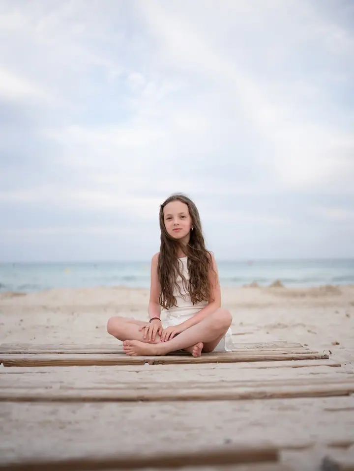
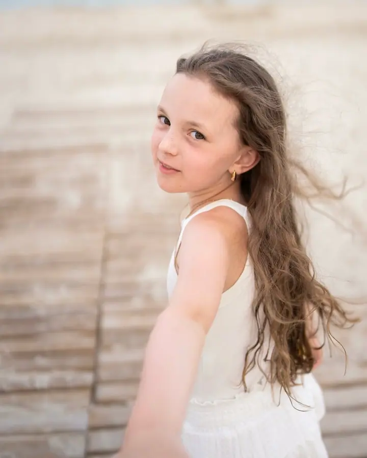
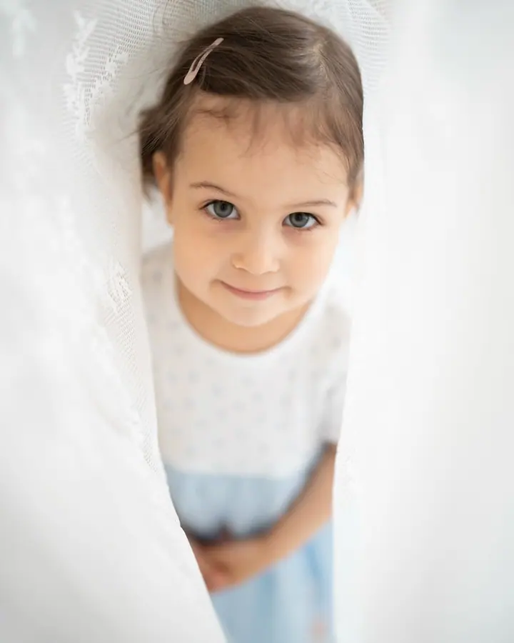
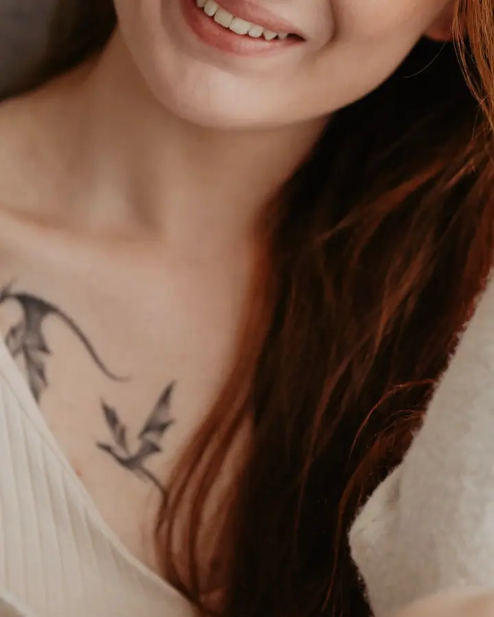
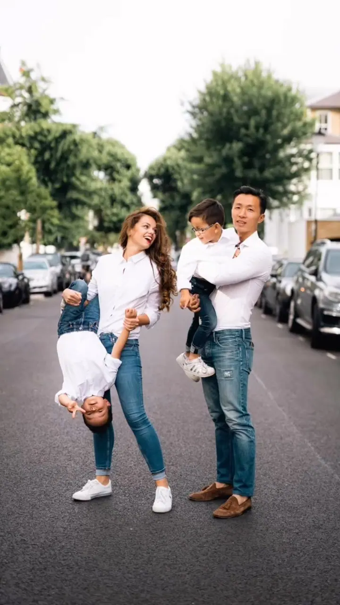
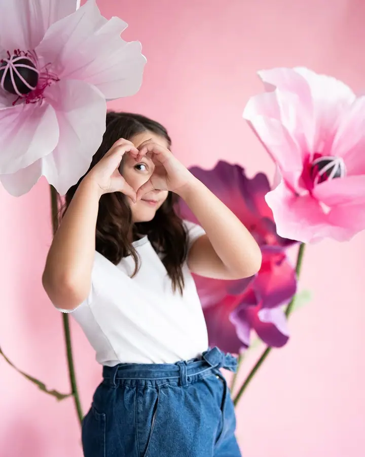

Svatební focení
Prožívám s vámi chvíle radosti i dojetí a během dne vás ráda trochu nasměruju, uklidním nebo vám poradím. Na přání přivezu i fotobudku, druhého fotografa nebo natočíme svatební video.





Jmenuji se Romana Borovičková a fotím svatby, rodiny s dětmi i úplně čerstvá miminka. Ateliér mám v Liberci, fotím ale i v Praze a v Londýně a na svatbu za vámi přijedu kamkoliv po Česku i Evropě.
Více o mně
„Já pro vás chci fotit takové obrazy, na které se budete chtít celý život dívat.“
— Romana Borovičková
Prožívám s vámi chvíle radosti i dojetí a během dne vás ráda trochu nasměruju, uklidním nebo vám poradím. Na přání přivezu i fotobudku, druhého fotografa nebo natočíme svatební video.
Konečně fotky, na kterých je celá rodina pohromadě, a ne jen na hromadném selfíčku. Odnesete si zážitek a spoustu rozesmátých fotek, které ocení i babičky.
Domluvte se se mnou ještě před porodem. Jakmile se miminko narodí, přijedu za vámi a vyfotím ho jemně, v košíku nebo v mámině náruči.
Vyfotím vás doma, venku v přírodě nebo ve svém ateliéru v Liberci. Samotnou, s partnerem nebo se staršími dětmi.
Fotím už dlouho a všechno fotím ráda: svatby, rodinné portréty, děti i novorozence. Momenty z vašeho života chci uchovat tak, abyste je mohli kdykoliv prožít znovu.
Svatby mě opravdu baví. Ráda jsem u chvil radosti i dojetí a během dne vás trochu nasměruju, aby vám bylo dobře a svůj velký den jste si užili. Na svatbách často nefotím sama. S Kubou natáčíme svatební klip a k focení můžu přivézt i svou fotobudku.
Od roku 2020 mám v Liberci vlastní ateliér, plně vybavený na těhotenské a rodinné focení. Když zrovna nefotím já, můžete si ho pronajmout. Už 10 let navíc tvořím obsah pro firmy, pro web, sociální sítě i tisk.
Ozvěte se přes formulář, e-mailem nebo telefonem. Ověřím termín a domluvíme se, co si od focení představujete.
U svatby se nejdřív potkáme a projdeme celý den. Součástí je i předsvatební focení v mém ateliéru, abychom se poznali.
Fotím vás v klidu a ráda vás nasměruju, aby vám před objektivem bylo dobře. Newborn fotím u vás doma, ostatní focení venku nebo v ateliéru.
Ze svatby dostanete 20 sneak peek fotek do 7 dnů a potom 350–550 upravených fotek v online galerii.
Svatební focení na rok 2026 začíná na 19 000 Kč. Zahrnuje schůzku, předsvatební focení v ateliéru, 7–10 hodin focení a 350–550 upravených fotek. Focení se svatebním videem začíná na 36 000 Kč.
Ano. Jsem z Liberce, ale na svatbu za vámi přijedu kamkoliv po Česku i Evropě.
Těhotenské focení můžeme udělat u vás doma, venku v přírodě nebo v mém ateliéru v Liberci. Na newborn focení přijedu za vámi, jakmile se miminko narodí.
Ceny za tato focení stanovuji individuálně. Napište mi, co si představujete, a domluvíme se.
romanka.borovickova@gmail.com
Liberec · Praha · Londýn